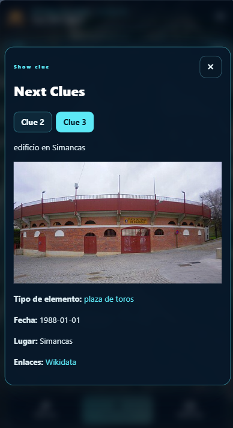
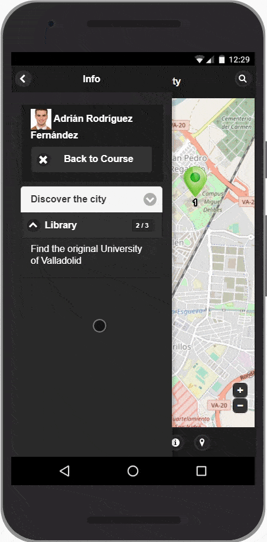
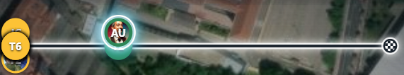
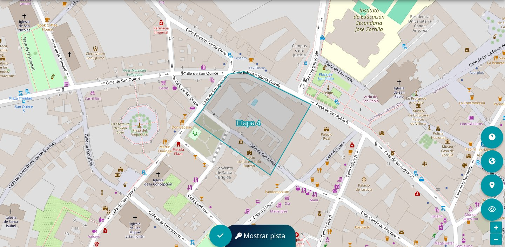
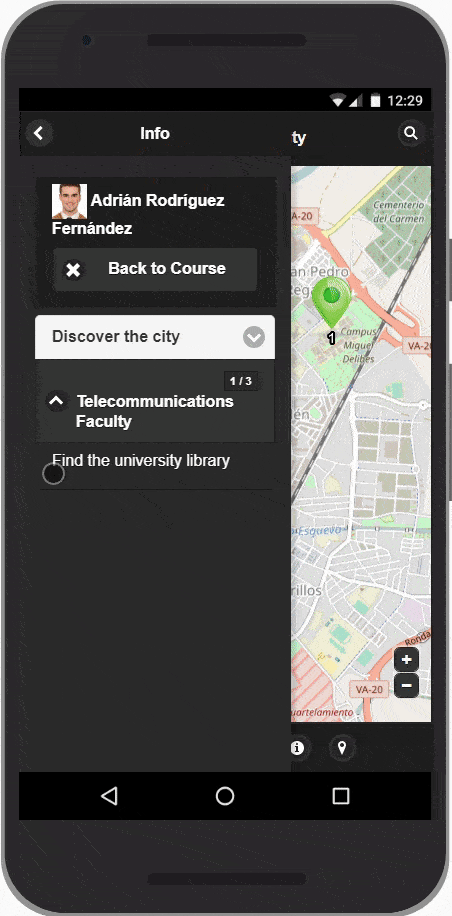
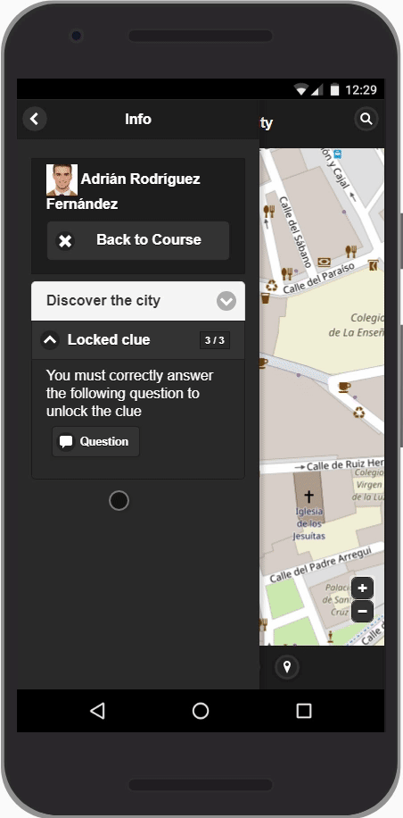
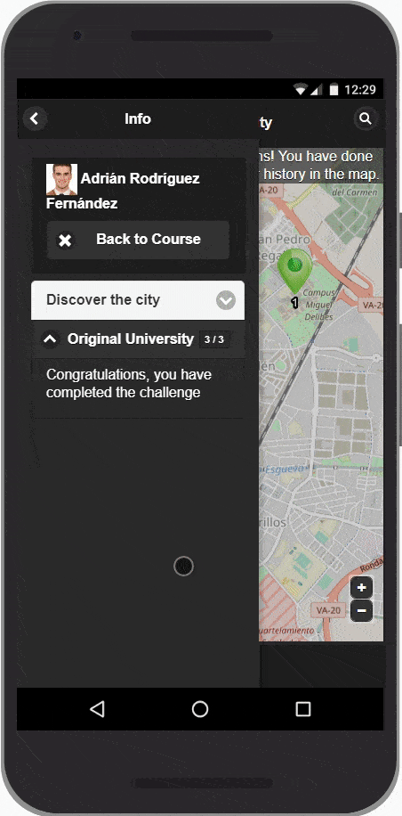

Before you leave
Open the activity in your Moodle course and read the introduction. Check your battery and internet connection. If the activity is played in teams, join the assigned Moodle group. Give the browser location permission for GPS play and camera permission if QR stages are included. Your teacher may ask you to use the standard map or a 3D viewer.


Read the available clues
Choose Show clues to open the clue viewer. If more than one stage can be discovered, its tabs show the corresponding stage numbers. Read the full text, including images and links. The clues may point to the next stage in the road or to an eligible stage that can be found out of sequence.
See the participant progress bar
If your teacher enables Show other students progress, a horizontal bar at the top of the player shows where participants or teams are along the road. Individual markers use a profile photo or initials; team markers use a colour and initials, and you can click or tap one to see the team name. Green means a participant passed a stage and is looking for the next one, amber means a stage is waiting for its restrictions, and red marks a failed stage. Your own marker has a brighter, thicker outline.

Mark a place
- Navigate the map and find the likely stage area. A direction or distance hint may help if your teacher enabled it.
- In moving mode, permit precise location and wait for the position to settle. In no-movement mode, choose a point directly on the map.
- Submit the position only when you are confident. Incorrect attempts may affect your score, depending on the activity settings.
- Read the feedback. Answer the stage question if one appears, then open the next available clue.


Scan a QR label
At a QR stage, open the scanner and allow camera access. Point the rear camera steadily at the entire code in good light. If the scan does not start, use the scanner test on the activity page or see camera troubleshooting.

Finish and review
Stages already completed outside the sequence are skipped as the road advances. When every stage is complete, the closing panel shows the completion message and any final text written by the teacher. You can review your attempts and progress on the map and on the activity page.
